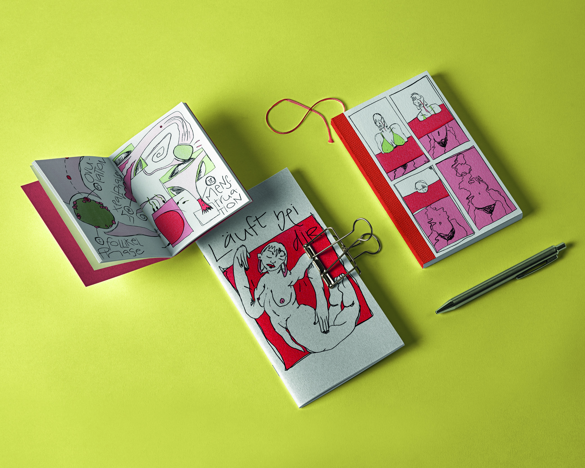
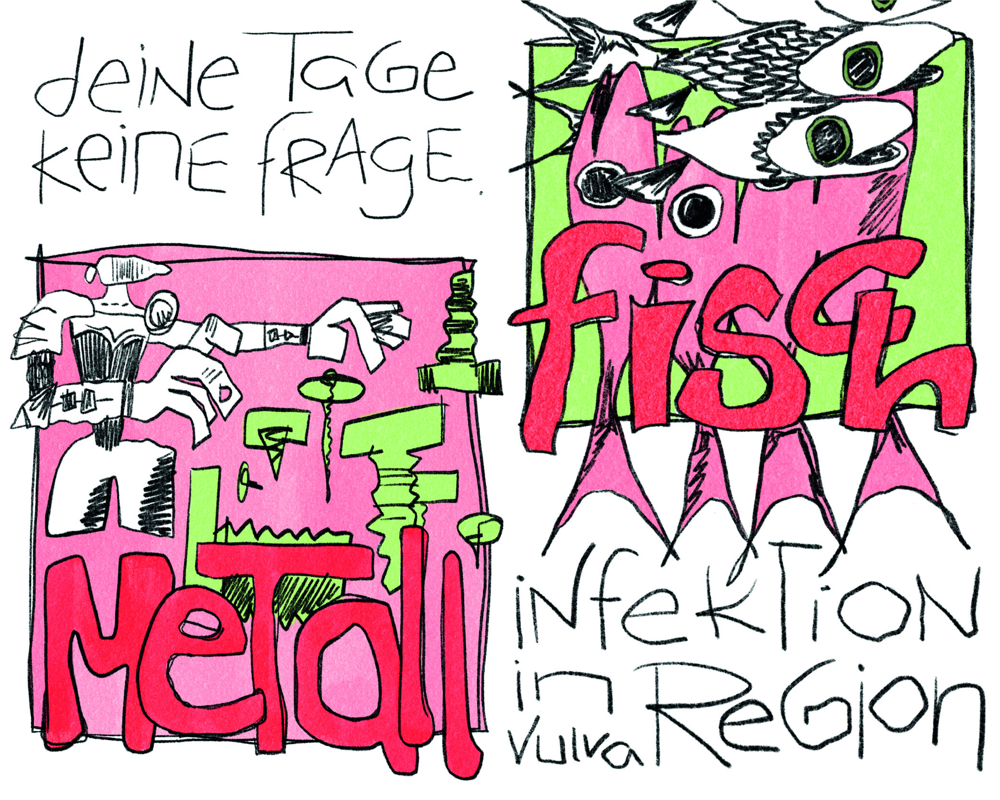

Warum also senken wir die Stimme, wenn wir andere um einen Tampon bitten?
Und warum ist die Scham,
nach
einem Tampon zu fragen, so viel höher als bei einem Taschentuch? Immerhin sind beides natürliche
Vorgänge. Ab und zu läuft es eben. Aber im Gegensatz zur Erkältung ist Menstruation nicht ansteckend.
Eine allumfassende Aufklärung und Sexualbildung in der Schule und Lektüren zur Selbstlehre sind daher
essentiell, damit Sexualität und Menstruation nicht mehr als etwas Seltsames oder Fremdes gesehen
werden.
Die Scham und das Tabu verhindern aber nicht nur das offene Gespräch.
Sie verhindern auch,
wirklich
Bescheid zu wissen über den eigenen Körper – und damit über die eigene Gesundheit.